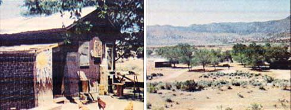

In every issue of MOTHER, I read reports from folks who've "gotten it together" and gotten themselves back to the country. One thing I've noticed is that most of these people-prior to making the Big Move-endured city life long enough to save sufficient money to buy a piece of property.
That's fine, but there are other ways of "goin' back" . . . quicker ways. I know, because Ladd and I were able to settle down here in the mid-California high desert without first toiling for years to buy our own farm. Instead, we're caretakers of a 40-acre one-time-boys'-camp called the Silver Spur Ranch.
Two years ago, Ladd and I made the mistake of moving away from the Kern Valley (where we first met and where we now live) in order to make money in the big city. We found, though, that six months in northern Los Angeles County was all we could take. Our firsthand experience with "city life" left us stifled and uptight . . . and not significantly richer.
So we moved back to the Kern Valley with only a few more dollars to our name than we'd set out with (certainly not enough to allow us to buy our own land). We simply returned with hopes of finding: [1] a place to live, [2] some work to do, and [3] time for all the crafts we loved and missed. We wanted to slow down again.
During our first few months back in the valley, we stayed with Ladd's brother, who lived in a house rent-free in exchange for working at a local ranch. (This is what I mean about "other ways" of getting back to the country. The ranches around here always need hired help, and working for them is a good way to learn a lot about ranching/farming.)
One day, while looking for parts for our 1942 Dodge, Ladd met old Fred (the "Goatman"). Upon learning of our situation, Fred invited us to come live on the Silver Spur Ranch-he was caretaker then-in exchange for a little work. Needless to say, we took him up on the offer and moved into one of the four cabins.
Well, time went by and-before we knew it-Fred moved onto his own land and we became the new caretakers of the Silver Spur.
Our principal duty now is to watch over the place to make sure that nothing more is destroyed. (It seems that previously, when no one was living here, vandals had inflicted damage upon the cabins and the well.) In return, we get a "spread" to live on free of rent, 40 acres of land to garden or farm as we please, and a freshwater creek that runs year round. There's no phone ringing in our ears . . . and no electricity bills to look forward to. It's truly a paradise in the middle of the desert!
Although we loved Silver Spur in all her run-down glory, we figured she could use a little beautification here and there. Hence, soon after we moved in we went to work cleaning and fixing her up. (We felt that as long as certain things needed doing, we might as well go ahead and do them . . . even if they weren't part of the original deal.) The owner is pleased.
Besides caretaking the ranch, we have other money making jobs . . . many more-in fact-than we really want to do. (There's not enough time left over for crafts!) It all started with some part-time weeding and has since snowballed into a regular church gardening job, a once-a-week motel and store assignment, and a multitude of other regular "odd jobs". We came upon all these openings by word of mouth and we still feel that "the grapevine" is a person's best bet for obtaining freelance rural employment (we think our situation proves that).
So. We one-time gypsies have really and truly settled down now and dug some roots into this country life.I will say that it's a lot of work . . . but despite this (and despite the fact that we don't own the land we live on) we love every minute of it. We can't even bear to think of returning to city life.
And we're not at all "the exception to the rule". There are plenty of places that need caretakers . . . plenty of ranches, homes, and farms that someone could live in, free of rent, in exchange for a little work. We've heard of many such opportunities since returning to the valley one and a half years ago . . . and this is just a single small area. Think of the number of opportunities that must exist in the whole country!
So all you folks out there who're living in the city while dreaming of a life in the country, take note. There's no real reason why you can't be living your dream right now.
To quote Jon D. Taylor (MOTHER NO. 32), "For Pete's sake, go!"
|
 |
|
|